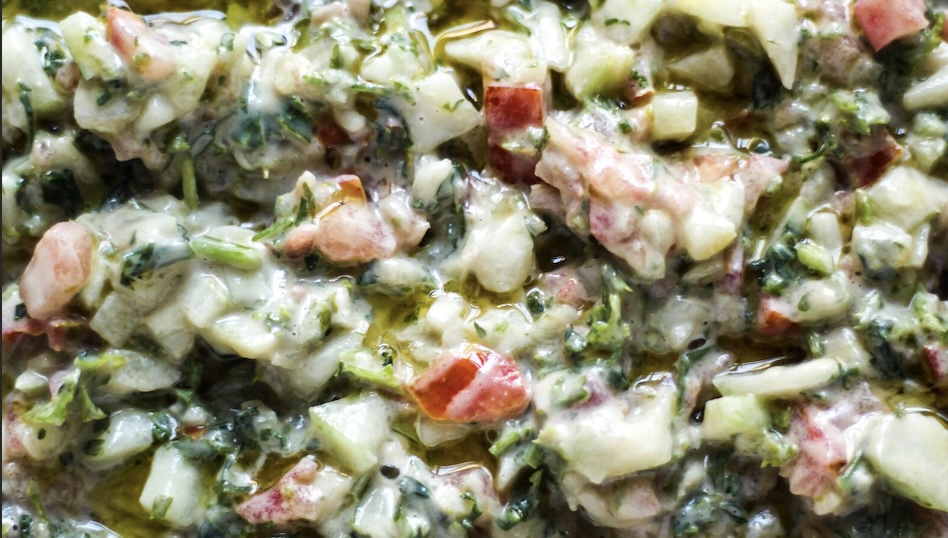

back

- ¼ cup tahini paste
- 3-4 tablespoons water
- 1-2 tablespoons lemon juice
- ¼ teaspoon salt
- Chop vegetables into small pieces, each vegetable
is chopped about ¼ of an inch or smaller.
- Pick parsley leaves, wash well, rinse, and chop finely.
- Place all chopped vegetables in a large bowl.
- Pour tahini dressing over chopped vegetables.
- Mix dressing well with vegetables, adjust by adding
more lemon and salt if needed.
- two persian cucumbers
- two roma tomatoes
- 4 ounces chopped parsley
- In a small bowl gradually add water over the tahini
paste and stir together.
- With a small utility whisk or a spoon mix tahini
and water together.
- Continue mixing until you get a creamy texture.
- Add fresh lemon juice and salt
- Give it another mix combining everything, and set it aside.